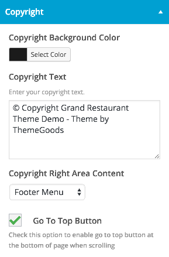
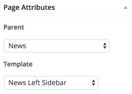
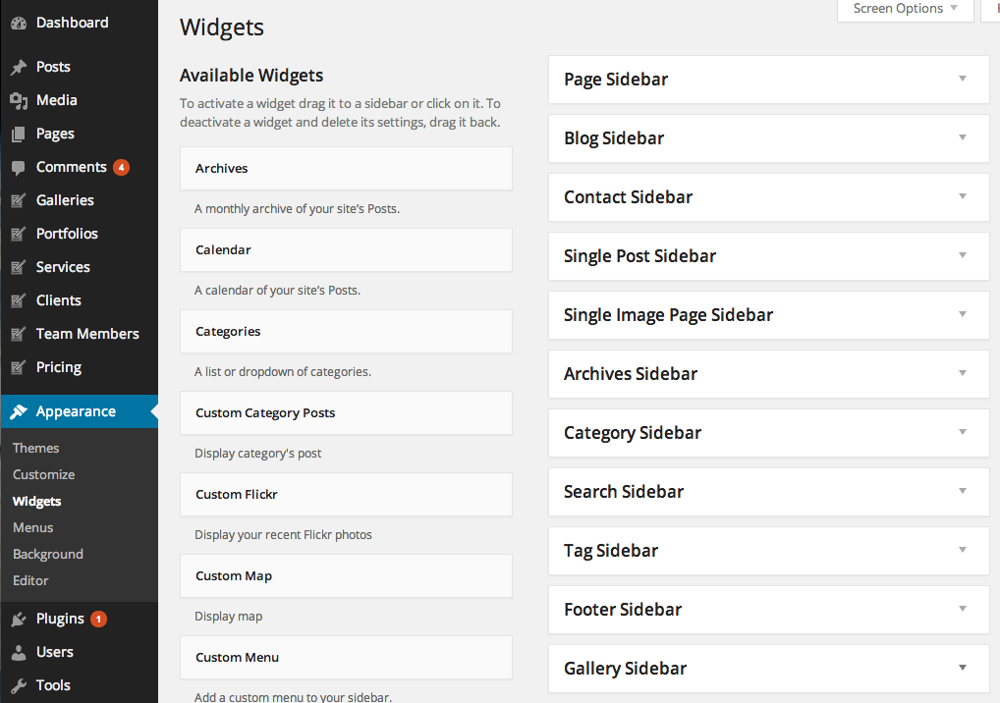
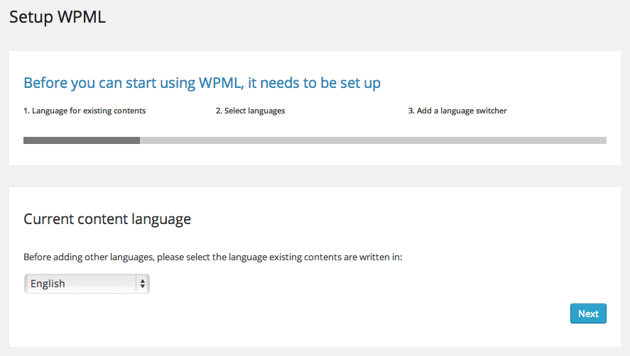

“Grand Restaurant Wordpress Template” Documentation by “ThemeGoods”
“Grand Restaurant Theme Documentation”
This a basic Grand Restaurant Theme documentation. Please visit our online documentation for advanced features.
Table of Contents
- What’s Included
- Installation
- Setting up header
- Setting up sidebar
- Setting up footer
- Setting up Revolution Slider Plugin
- Setting up page
- Setting up homepage
- Setting up food menu
- Setting up gallery
- Setting up team member
- Setting up pricing
- Setting up testimonials
- Setting up blog post
- Setting up contact and reservation
- Shortcodes
- Widgets
- Translation
- WPML Plugin For Multilingual Content
A) What’s Included - top
When you purchase our theme from Themeforest. You can download Grand Restaurant files from Themeforest > Your Account > Downloads. Navigate through your purchased items and find Grand Restaurant. Click download button then you will se 2 options. Main file contain everything. Installable Wordpress Theme is included only installable Wordpress theme file. Check list of what's included when you download the main file option.
- Installable Theme File (.zip) - You can upload this file to your Wordpress to install the theme.
- Documentation - Contain theme documentation file.
- Licensing Folder - Contain all licensing info files.
- Plugins Folder - Contain useful plugins including Revolution Slider.
- Sample Contents Folder - Contain standard Wordpress import content files and import theme setting files.
- Changelog (.txt) - Included all theme versions changelog info
Free Theme Support
All of our themes come with free support and currently we handle all support questions through Our support portal. Go to Grand Restaurant Theme Page on Themeforest and click Comments tab. Please make sure you logged in with your purchased account.
Support includes- Responding to questions or problems regarding the item and its features
- Fixing bugs and reported issues
- Providing updates to ensure compatibility with new software versions
- Customization and installation services
- Support for third party software and plug-ins
B) Installation - top
In order to begin installing Grand Restaurant theme. You need the latest version of Wordpress. Here is the download URL. Once you downloaded and set it up, You are ready to go.
Upon downloading the package, you will have an Installable Theme File (.zip) inside the theme package. Follow the steps below to install theme

- Go to your Wordpress Dashboard and navigate to Appearance > Themes
- Click Add new and hit upload button
- Select Grand Restaurant Installable Theme File (.zip) file from your computer and click "Install Now" button
- Once finished uploading theme file. Go to Appearance > Themes and activate it.
- Then you will be redirected to theme admin panel page and next step you need to install Revolution Slider plugin and add your contents.
Common Wordpress Installation Issue
Missing style sheet error when installing the theme A common issue that can occur with users new to installing WordPress themes is a “Broken theme and/or stylesheets missing” error message being displayed when trying to upload or activate the theme. This error message does not mean that the theme you have purchased is broken, it simply means it has been uploaded incorrectly. Luckily, there is a very easy fix.Import Demo and Settings
When you first install the theme. It won't included all extra content that you have seen from live demo site. You can import Grand Restaurant Demo content. Go to Theme Setting > Demo Content and select which demo you want to import then click "Import Selected".B 1) Setup header - top
Grand Restaurant includes a advanced theme admin panel. Inside Appearance > Customize > Header Header tab. Where you setup all options for header area.

Top Bar
You can enable "Top Bar" via Appearance > Customize > Menu > Top BarUpload Logo
By default Grand Restaurant displays its standard logo in header. You can replace it with your logo image. Go to Appearance > Customize > Logo & Favicon. Click "Select Image" button and select logo image from your computer.
Transparent Logo
Some pages use transparent logo instead of general logo for example all fullscreen templates and page with custom header background. It's easier for you to upload transparent logo just for these background image focused pages. Recommend white color image for transparent logo".
Page Title

You can change page title size, background color, font color and family. Go to Appearance > Customize > Header > Page TitleYou can customize all page title related elements options there.
Setting up Primary Menu
Grand Restaurant Support custom Wordpress menu, you can organise them into dropdown menu too. You can also change its style, background color, sub menu color and many other using theme admin panel.
- Go to Appearance > Menus. Click "Create Menu" button
- To add menu items, select one of your pages/posts on the left hand boxes. Then click "Add To Menu".
- If you want to add custom link menu item (for example home link). Select "Links" and enter URL, Link Text there.
- You can organise your menu items using drag&drop functionality. Simple drag a menu item right below to the parent menu item.
- After setting up your menu, scroll down to the bottom of the page then assign the menu to "Primary Menu" in the Theme Locations box.
Setting up Footer Menu (Optional)
You can also add footer menu using above steps. Only when you select menu location, select "Footer Menu".
Setting up Top Bar Menu (Optional)
You can also add top bar menu using above steps. Only when you select menu location, select "Top Bar Menu".
Setting up Side (Mobile) Menu
You can also add footer menu using above steps. Only when you select menu location, select "Side (Mobile) Menu". This menu is also used for mobile devices.
Wordpress Custom Menu Tutorial
For those who are not familiar with Wordpress menu system below are video tutorial.
Setup Menu Colors

You can change menu background, font colors, font family, size and etc. using theme admin panel. Go to Appearance > Customize > Menu. There are many options to customize menu including typorgraphy, colors, background, sub menu options, mega menu options, top bar, contact info, search and side menu.
You can also change sub menu background, font colors, font family, size and etc too. Once you finish customising. Click "Save & Publish".
Side Menu & Live Search

Grand Restaurant also has built-in live search feature so it displays search results as user types. You can activate this option. Simply go to Appearance > Customize > Menu > Search and enable "Use Instant Search". You can also customize side menu options via Appearance > Customize > Menu > Side Menu
B 2) Setting up sidebar - top

Grand Restaurant comes with default sidebars. You can add widgets to the sidebar using Appearance > Widgets You will find your selected widget on the right side. Simply drag and drop widgets you want from the left side boxes into the sidebar box.

If you want to add your custom sidebar. Go to Theme Setting > General > Custom Sidebar Settings and sidebar name and click Save All Changes button.
Sidebar Typography and Styling

You can change sidebar font size, font family, font color and etc. Go to Appearance > Customize > Sidebar
B 3) Setting up footer - top
The first area of Grand Restaurant footer is a widgetized section which you can displays them into 1-4 columns. This content can be organised in Wordpress Dashboard > Appearance > Widgets
Setup Widgets to Footer

- First you have to enable it. Go to Appearance > Customize > Footer > General
- Select number of columns to display from 1-4 for Footer Sidebar Columns option.

- To add widgets, go to Appearance > Widgets
- You will find "Footer Widget" section. Simply drag and drop widgets you want from the left side boxes into the "Footer Sidebar".
Setup Footer Background & Colors

You can change footer background color, font color and etc. Go to Appearance > Customize > Footer > General > Colors once finish customising. Click "Save & Publish" button.
Setup Copyright Bar
Below the widgetized area of footer is copyright bar where you can add your copyright text including link to it. Go to Appearance > Customize > Footer > CopyrightYou can also select content for right copyright bar area between social icon and footer menu
The go to top option if you enable it. It will display arrow up button when visitor click on it. It will redirect to the top of page.
B 4) Setting up Revolution Slider Plugin - top
In order to use "Revolution Slider". You have to install "Revolution Slider" plugin.
- Log into your WordPress Admin area.
- Look down the left hand column for “Plugins” and then click on the word “Plugins”.
- Just to the right of the title “(Manage) Plugins” in the image above, you can see a button marked “Add New”, click this button.
- The image above shows the option to upload the plugin from your own PC, this is the revslider.zip inside the zip you had previously downloaded from Themeforest. Install the zip and click on "Activate Plugin".
To use Revolution Slider as main homepage slider engine. Go to Theme Setting > Homepage > Select Slider Engine and select "Revolution Slider".
Click here for detailed instructions for Revolution Slider.
B 5) Setting up page - top
- Go to WordPress Dashboard > Pages and click Add New
- Add page title and content. Then find Page Attributes box on the right side.
- Select page template you want for this page.
- Find Page Option box and select Page Sidebar you want to display on this page. (If you selected page with sidebar template)
- Once you are done. Click Publish button
Background Header Image
You can upload page background header image using Set featured image option (at the right bottom corner of edit page).
Make Menu Transparent

You make main menu transparent over page header background image. Simply check "Make Menu Transparent" in page option box of edit page.
Responsive and Mobile options
You can enable "Responsive Layout" for mobile. Open Appearance > Customize > General > Mobile.
Content Builder
Grand Restaurant has built-in "Content Builder" for page. Basically you can select available content types. Once your selected, it will open a popup which you can setup options for selected content type. Once you finish adjusting options. Click "Save Changes". Lastly you can change content order using drag and drop in content builder box.

If you want to use Content Builder. In Content Builder Option box. Check "Enable Content Builder" option. Then select which module you want to add. It will open a popup of module's options. Once you enter module's options then click update.


B 6) Setting up homepage - top
By default, when you activated theme. Your homepage will display your recent posts and you can change its option. From your admin sidebar Settings > Reading > Front page displays select "Your latest posts". You can also change number of blog posts per page there too.

You can also change your homepage content to a page. From your admin sidebar Settings > Reading > Front page displays select "A static page (select below)" and select a page you want to use as homepage.
Since this option works with any default Wordpress pages. So you can create a page using "Content Builder", shortcode or any HTML too.
B 7) Setting up food menu - top
First thing to create food menu content is to create a menu post. Theme has various post options for you display different content on your food menu.
- Go to WordPress Dashboard > Menus > Add New Menu
- Enter post title. You can add post excerpt too for example menu’s recipe info.
- Assign this menu to menu category using menu categories box on the right side.
- Upload menu featured image using set featured box on the bottom right side. All pages will use this image for post preview image and thumbnail.
- Once you finish, click Publish.
Menus Options
- Price – Enter menu price in number only.
- Price Currency – Enter menu price currency for example $
- Highlight this menu – Check this option to highlight this menu in menu page templates.
Food menu Content Builder
You can also display team members content using Content Builder too. When you create a page. Find content builder option box and select Food... menu option and click Add button.
B 8) Setting up gallery - top
First you have to create a gallery. From your admin sidebar, open Galleries > Add New Gallery. You will get add new gallery form. Enter gallery title and description then click "Publish".

Next you have to add images to this gallery. From gallery admin page. Click on "Upload Image".
Then select images you want to upload to this gallery. Once you finish upload each image. It will automatically attach to this gallery. You can also change image title and description from this page. If you want to change order of images within gallery. You can easily drag&drop image next to each one. Once you finish dragging, click "Update" to save changes.
Now you have a gallery. There are few options to add gallery to page/post. You can add gallery content using content builder or shortcode.
Sorting Images in The Gallery
By default you can drag&drop to order images using gallery admin. However if you have many images in the gallery. It's not easy to change image order using drag&drop. So you can overwrite image order using Appearance > Customize > Gallery > Images Sorting and select sorting option you want to use.B 9) Setting up team member - top
From your admin sidebar, open Team Members > Add New Team Member. You will get add new team member form. Enter name and description. You can assign this member to team category using team categories box on the right side.
Team Options
- Position and Role - Enter team member position and role ex. Marketing Manager
- Facebook URL - Enter team member Facebook URL
- Twitter URL - Enter team member Twitter URL
- Google+ URL - Enter team member Google+ URL
- Linkedin URL - Enter team member Linkedin URL
Upload team member photo using set featured box on the bottom right side. Once you finish, click Publish.
Team Content Builder
You can also display team members content using Content Builder too. When you create a page. Find content builder option box and select Team as its content type and click Add button.B 10) Setting up pricing - top
From your admin sidebar, open Pricing > Add New Pricing. You will get add new pricing form. Enter this pricing plan title.
Pricing Options
- Make this pricing featured - This option will highlight pricing header with color
- Currency - Symbol of pricing currency
- Exact Price
- Time - Enter price per timing (optional) for example /month
- Plan Features - Enter plan features list. Enter new line to make it display in the new list item.
- Button Text - Enter this pricing button text
- Button URL - Enter this pricing button URL so visitor click the button. They will be redirected to this URL.
Pricing Shortcode
Pricing shortcode can display in 2 styls. 3 and 4 columns. Using tg_pricing shortcode and enter columns attribute and also you can enter items attribute to filter the number of pricing plan to display. Here is an example code.[tg_pricing columns="3" items="3"]
[tg_pricing columns="4" items="4"]
B 11) Setting up testimonials - top
From your admin sidebar, open Testimonials > Add New Testimonial. You will get add new pricing form. Enter this testimonial title.
Testimonial Options

- Customer Name - Enter Testimonial customer name
- Customer Position - Enter Testimonial customer position
- Customer Company Name - Enter Testimonial customer company name
- Customer Company URL - Enter Testimonial customer company URL. They will be redirected to this URL when click on customer company name.
B 12) Setting up blog post - top
First thing to create blog content is to create a post post. Grand Restaurant has various post options for you display different content on your blog post. Here are the steps to create a blog post.
- Go to Wordpress Dashboard > Posts > Add New
- Enter post title and content. You can use any shortcode or HTML for post content.
- Assign this post to category using categories box on the right side
- Add tags to this post. Type tag name in to the field in Tags box on the right side.
- Upload post featured image using set featured box on the bottom right side. All pages will use this image for post preview image and thumbnail.
- Once you finish, click Publish.
Post Options

- Post Layout - Select single post page layout between fullwidth and with right sidebar.
- Featured Content Type - Select featured content type you want to display at the top of this post.
Single Post Settings

You can change single post page setting using Appearance > Customize > Blog > Single Post
Setting up News Page
Once you create blog posts using standard Wordpress method. To display your posts on page, you have to create a news page. Here are the steps to create a news page.

- Go to Wordpress Dashboard > Pages and click Add New
- Add page title and content. Then find Page Attributes box on the right side.
- Select template begin with News... as page template.
- Find Page Option box and select Page Sidebar you want to display on blog page. If you select News Left Sidebar or News Right Sidebar as page template.
- Once you are done. Click Publish button
Blog Content Builder
You can also display blog content using Content Builder too. When you create a page. Find content builder option box and select Blog as its content type and click Add button.Archive, Category and Tag Layout Settings

You can change archive, category and tag page layout setting using Appearance > Customize > Blog > General
B 13) Setting up contact and reservation - top

First, you have to setup your contact email address. Open Theme Setting > General and setup your email address. From your admin sidebar, open Pages > Add New. You will get add new page form. Enter page title and description.
Next you can add contact form to page using content builder. When you edit a page, select "Contact" module and add it to content builder then save changes.
Setting up Reservation
First, you have to setup your reservation email address. Open Theme Setting > General and setup your reservation email address. Once you setup reservation email address. Reservation button will display next to your main menu.
Contact Form 7 Plugin
You can use contact form shortcode as shown on demo site. First you have to install "Contact Form 7" Plugin and you can download it here. Then install the plugin. From your admin sidebar, open Plugins > Add New > Upload. Then upload and install the plugin. Once you installed, activate it and it will be ready to use.
Once you installed Contact Form7. You will find new tab on the left side name "Contact". Open Contact > Add New
Now you will see new contact form page. Enter name and find Form box. On the right side select field you want to use in your contact form. You can select from text, email, date etc. You will get new contact field info box.
From example screenshot. I have to copy [email email-863] and add the code to left side form in order to display email field in my contact form.

Then copy [email-863] to the Message Body form to display email information in the email when it's sent.

Once you finnish adding all contact form fields. Click Save button and copy contact form shortcode under its name and paste to any pages or posts to display the contact form you created.
B 14) Shortcodes - top
Grand Restaurant has many built-in custom shortcodes. You can see full lists of them from demo site. You can also use shortcode generator to generate sample code of theme shortcodes.

Go to Pages and edit or add new page. You will find Shortcode Options box at the bottom. Select Shortcode you want to use and fill all options then click Generate Shortcode
Limitations
Tab Shortcode is not support in Shortcode Generator. You can find tutorial about how to use it here.
B 15) Widgets - top

Grand Restaurant includes 7 custom widgets. All widgets can be used in standard Wordpress widget system in Appearance > Widgets. You can drag&drop the widget on the left side over sidebar option on the right side. Each widget has its settings option and you put as many widgets as you want to the sidebar. Once you change the setting of widget, please make sure you click Save button.
Twitter Widget Option
In order to use new Twitter API. You have to register your application using your Twitter account. Please go to https://dev.twitter.com/apps/ and login with your Twitter account
Create new application then click to create the access token, then refresh the page.

Enter your customer key, customer secret, access token and access token secret to Theme Setting > Social Profiles > Twitter API Settings and you can add Twitter widget to sidebar using Appearance > Widgets
B 16) Translation - top
We provided translation files to translate theme into your language. Both Grand Restaurant.po and Grand Restaurant.mo files are located in language folder of theme. Here are steps to translate theme into your language
- You need an application name "PoEdit" and you can download it for FREE here http://www.poedit.net/.
- Use translation field for your translation text.
- Once you finish translating. Save file to your language name for example en_US.po and it will generate both .mo and .po files.
- Open wp-config.php which is located in your Wordpress root directory. Change defined value WPLANG with your language name for example en_US
- Logged in to your server using FTP client. then navigate to theme language folder (/wp-content/themes/Grand Restaurant/languages)
- Upload both .po and .mo files to languages folder.
B 17) WPML Plugin For Multilingual Content - top
Grand Restaurant support WPML plugin for Multilingual content . First you have topurchase WPML license from https://wpml.org and your can download the plugin from your WPML account page (download WPML Multilingual CMS). Then install the plugin. From your admin sidebar, open Plugins > Add New > Upload. Then upload and install the plugin. Once you installed, activate it and it will be ready to use.

Now you will have WPML menu on the bottom left of Wordpress Dashboard. The first step is to setup your current language.

Next step. Select other languages you want to use on your site.
The last step is to add language switcher to your site. There are many ways to add it. You can select sidebar to display language switcher from the option "Choose where to display the language switcher widget".
If you are familiar with PHP coding. You can also add custom language switcher using PHP code. Please see sample and tutorials here.
Another option is to add language switcher to your menu. Check "Display the language switcher in the WP Menu". option and select your main menu.

Next, go to your WPML account > Downloads and download WPML String Translation plugin. Install the plugin. From your admin sidebar, open Plugins > Add New > Upload. Then upload and install the plugin. Once you installed, activate it and it will be ready to use.
Open WPML > Theme and plugins localization and check "Translate by WPML." and click Save button. Now WPML should added all translation strings to the system.
Open WPML > String Translation you will see list of all translation text. Click translations and enter translated text.
This is a basic step to translate theme strings into multiple languages. You can learn more about advanced options and other WPML features from WPML site.
Once again, thank you so much for purchasing this theme. As I said at the beginning, I'd be glad to help you if you have any questions relating to this theme. If you have a more general question relating to the themes on ThemeForest, you might consider visiting the forums and asking your question in the "Item Discussion" section.